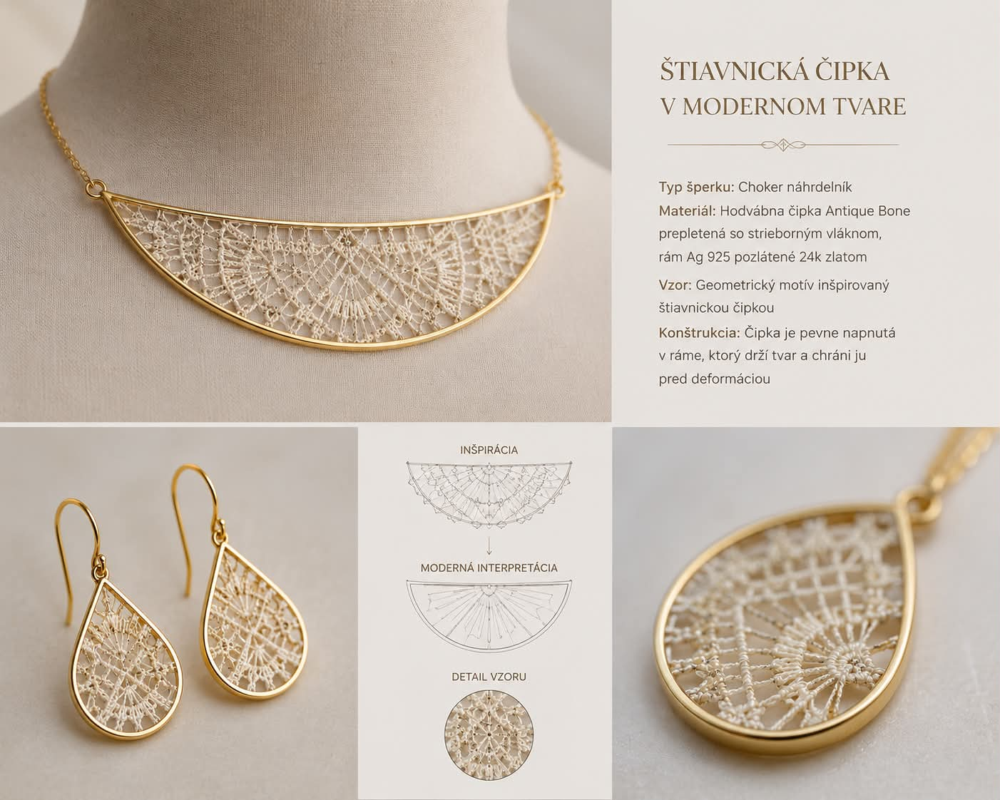

Dedicated to Nathalie
MIM IMAGERY Atelier x NAREIA
[ An Artist-to-Artist Manifesto ]
True luxury cannot be rushed; it blooms in its own time, rooted deeply in soul, patience, and heritage. As a fellow designer observing the tactile beauty, intricate knots, and breathtaking texturing of your brand, Nareia, I felt a profound connection to your creative universe. We both understand that handmade art carries a frequency that machinery can never replicate.
My own journey traces back to a youth spent graduating in Fashion Design, where I mastered traditional Slovak bobbin lace. Recently, stepping into the raw, cinematic atmosphere of Banská Štiavnica triggered a powerful artistic reawakening. After 35 years of creative silence, I returned to the bobbins, the thread, and the wooden tools of my ancestry.
While Paul's capsule collection is presented here for evaluation, a bespoke, handmade piece of traditional Slovak heritage lace is being woven on the bobbins in my atelier—dedicated entirely to you. This ancient craft demands absolute devotion, and it is a pure honor to create a tangible story where high-end eco fashion meets our deep European roots.

The Heritage Jewelry Concept
- Jewelry Type: Choker Necklace & Tear-drop Earrings
- Materials: Antique Bone silk lace interwoven with metallic silver threads, encased in a premium Ag 925 silver frame plated with 24k yellow gold
- Pattern: Geometric architectural motifs inspired directly by traditional Slovak bobbin lace from Banská Štiavnica
- Construction: The delicate lace is tightly tensioned within the solid gold-plated frame, maintaining its perfect structural alignment and protecting the artwork from deformation